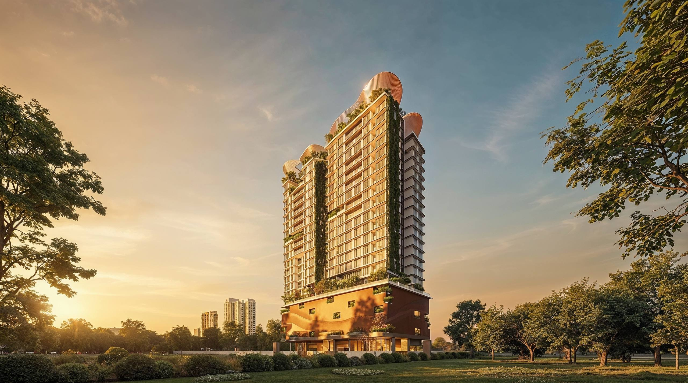
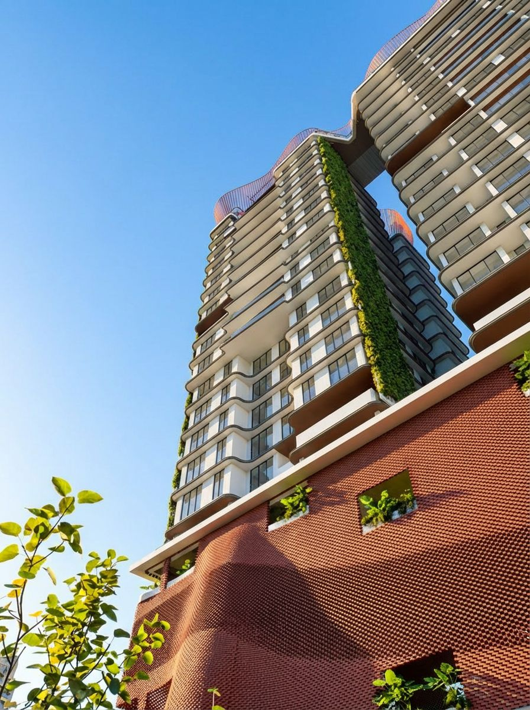
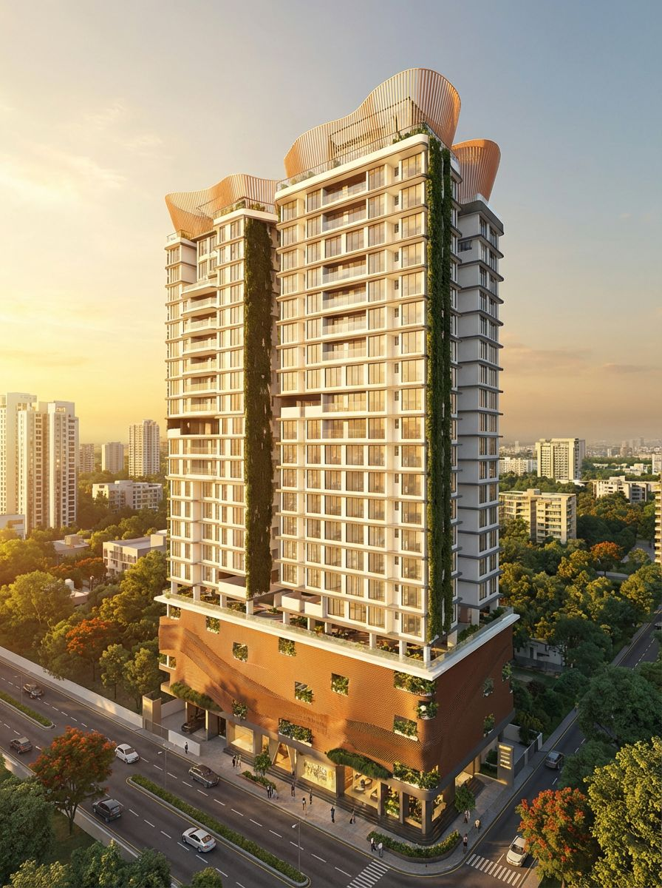
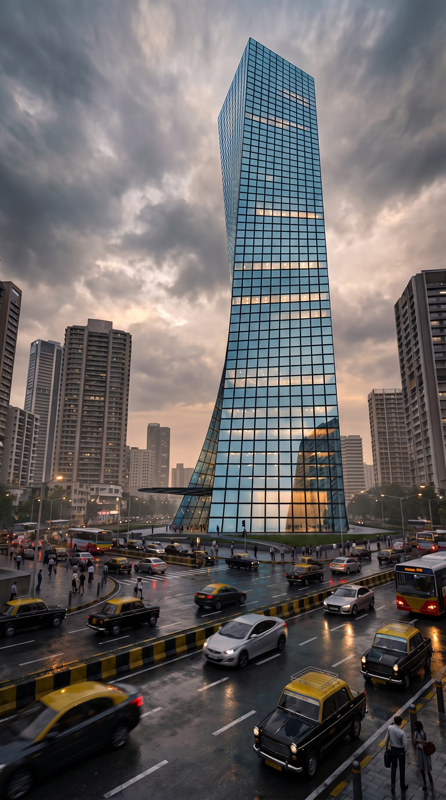
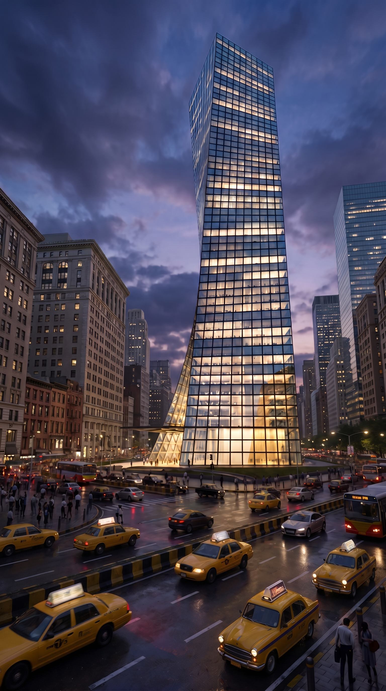
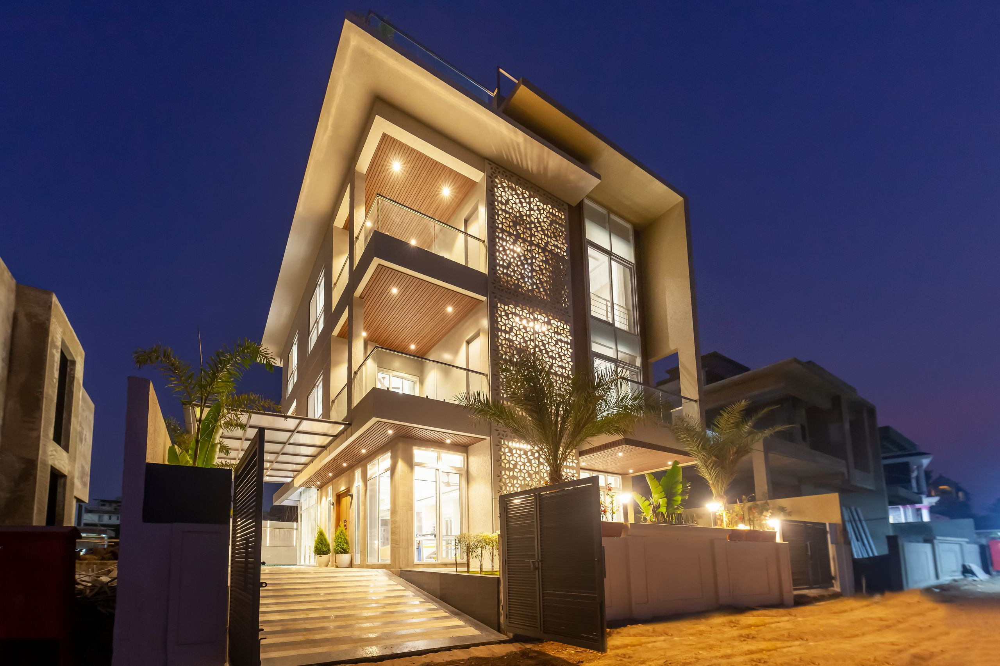
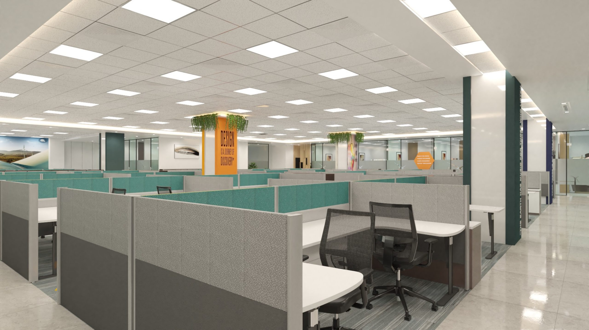
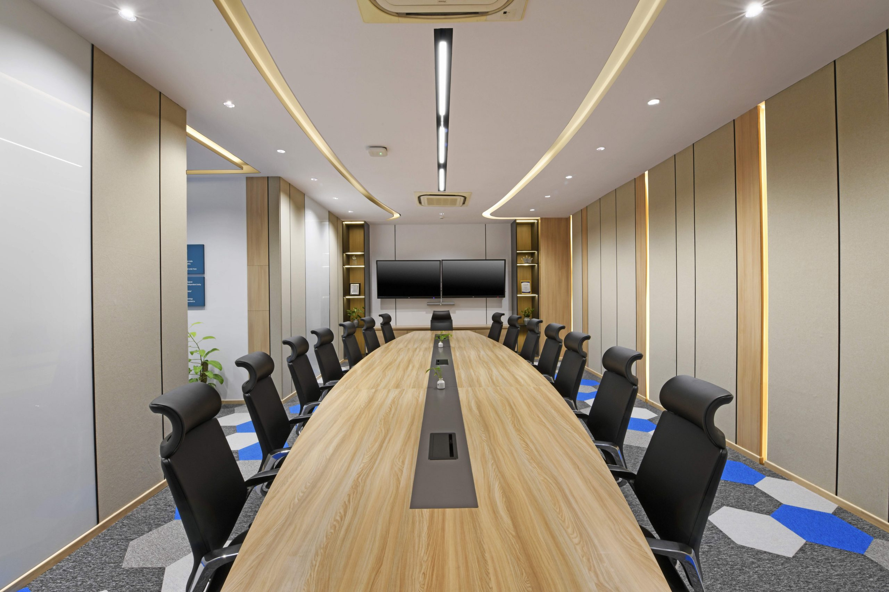

Ar. Deepakk Bhatija
23 years of large-scale projects — now midway through a Master's in Computational Design. The hand that sketches also writes the algorithm.

urnaby Sanjay Mittal.
A residential tower rising over Versova, Mumbai — a zero-discharge, parametric Art-Deco landmark of roughly 97,000 built-up square feet, rising to eighteen storeys at an FSI of 5.4. urna by Sanjay Mittal — Concept · in design development

The podium

In its street

Cadence.A tower with a turn in it.
A faceted, twisted glass office tower — its glazed planes shifting storey by storey so the skyline reads it differently from every street. Cadence — Concept · in design development

At dusk

AMODAA.A bungalow at Lonavala.
A hill-station bungalow wrapped at dusk in a lit perforated-metal screen — a single house carrying the studio's full range from massing to the last joint. AMODAA · Lonavala — built work
BuildHive Architects · Mumbai
Masterplanners, architects and interior designers — with a 95%+ match between the render you approve and the keys you receive.
01 — The Studio
Two principal architects and one tight team — small enough that the people who sketch your building are the ones standing on its slab, equipped like a firm ten times the size.
02 — Built at Scale
03 — Method
Phases overlap — approvals and procurement run while design details. Door to door: 75–90 days.
Twelve commercial projects in the record — every one handed over in ninety days.
12 projects · every one: 90 days
05 — Works
Works span BuildHive and DBC — sister concerns, shared principals, one team.
06 — The Principals
23 years of large-scale projects — now midway through a Master's in Computational Design. The hand that sketches also writes the algorithm.
24 years and a UK practice behind him, with one obsession: the built thing must match the drawing. He is the reason the 95% number exists.
Key partnersHarsh Gangar & Associates · Epicons Consultants · Avinash Raj & Associates · AP Energy
04 — The Proof
The render is the promise; the photograph is the receipt.


A floor is not one decision. It is hundreds, repeated.
We resolve them once. A floor decomposes into a small set of workplace modules — a desk cluster, a meeting room, a corridor run — designed to a fixed standard, then replicated across the plate. Each repeat reuses a settled detail, so the decision count collapses and the schedule holds. Fewer unique parts means fewer things to draw, price, procure, and check.
Repetition also disciplines the services. Intelligent zoning and load balancing size the cooling to the way the floor actually works, rather than to a worst-case guess. A 100,000 sqft office carries roughly 400 TR of air-conditioning load; zoning that load module by module is where the operating cost comes down — and where the energy targets are met without compromise.
The module is the unit. The building is the count.
We build the project twice. First in the model, then on site.
In the model, every discipline — architecture, structure, MEP, interiors — occupies the same coordinated space. A duct that wants the path of a beam shows up as a clash on screen, where it costs a redraw. So clashes die on the screen, not on site, where they cost a week. The bill of quantities is extracted straight from the model, so what is priced is what is drawn. 4D scheduling ties the geometry to the calendar, so the sequence is tested before anyone mobilises.
Through the build, 24/7 live HD cameras keep the site visible from anywhere. At handover the model is updated to as-built, so you receive the building — and its model: a single source of truth that outlasts the keys.
Before a single workstation is placed, we map the floor.
Geopathic stress is the term for natural distortions in the earth's energy field — caused by underground water streams, geological faults, and the Hartmann and Curry grid lines that cross the ground. These zones are not confined to the basement. They rise through a building up to roughly 1,000 ft, and along their lines people report weaker concentration and slower decisions.
So the mapping comes first — before space planning, not after. Stress lines, water veins, and fault zones are identified and documented, and the work that needs the clearest heads — leadership, finance — is positioned off those lines. Vastu alignment is read on the same map.
The correction is made once, during fitout, before the walls close. Done once, it is permanent and needs no structural rework afterward. Quiet engineering, applied to where people sit.